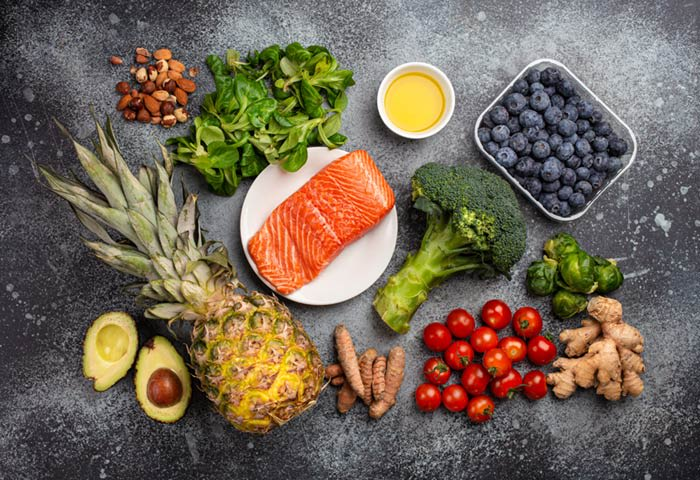
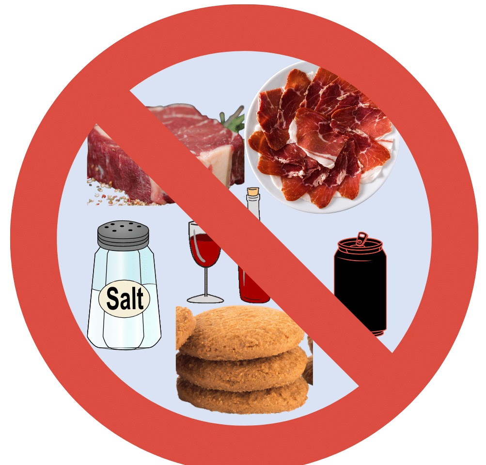
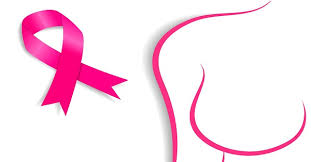
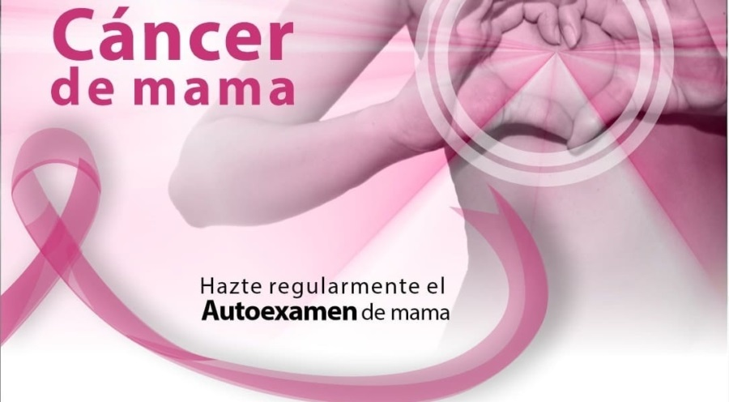

Autocuidado
Es muy importante estar alerta frente a estos factores de riesgo y a cambios tempranos que puedan presentarse
en el aspecto físico del seno.
Por todo lo anterior, es importarte que tengas claro y lleves a casa estos tres mensajes:
Es clave que todas las mujeres realicen su autoexamen periódicamente, para que se puedan detectar a tiempo
posibles anormalidades en la mama.
A partir de los 40 años, el examen clínico del seno se debe realizar anualmente, y por un médico, o antes si
existe algún hallazgo anormal en el autoexamen.
La principal medida de tamizaje es la mamografía cada dos años, a partir de los 50 años.
 Fuente
Fuente
Alimentos que Ayudan a Prevenir el Cancer de Mama
Ningún alimento o dieta puede prevenir o causar cáncer de seno, pero las decisiones dietéticas de una persona
pueden marcar una diferencia en su riesgo de desarrollar cáncer de seno o en su bienestar general mientras
vive con la afección.
una persona puede controlar otros factores, como fumar, su nivel de actividad física, el peso corporal y la
dieta. Algunos investigadores han sugerido que los factores dietéticos podrían ser responsables del 30% al
40% de todos los cánceres.
Alimentos Que Debes Comer
Las frutas y vegetales frescos pueden ayudar a prevenir el cáncer de seno.
El cáncer de seno puede comenzar en diferentes lugares, crecer de diferentes maneras y requerir diferentes tipos de tratamiento. Así como los tipos particulares de cáncer responden mejor a ciertos tratamientos, algunos tipos de cáncer responden bien a alimentos específicos.
Los siguientes alimentos pueden desempeñar un papel en una dieta saludable en general, y también pueden ayudar a prevenir el desarrollo o la progresión del cáncer de seno:
1. variedad de frutas y vegetales
2. alimentos ricos en fibra, como granos enteros, frijoles y legumbres
3. leche baja en grasa y productos lácteos
4. productos a base de soja
5. alimentos ricos en vitamina D y otras vitaminas
6. alimentos, particularmente especias, con propiedades antiinflamatorias
7. alimentos, principalmente de origen vegetal, que contienen antioxidantes
Los patrones dietéticos que priorizan estos alimentos incluyen:
1. una dieta sureña rica en vegetales cocidos, legumbres y batatas (camote)
2. una dieta mediterránea, que enfatiza el consumo de frutas y vegetales frescos y los aceites saludables
3. cualquier dieta “prudente” que contenga muchas frutas, vegetales, cereales integrales y pescado

Fuente
Alimentos que se Deben Evitar Consumir
1. Calorías vacías
2. Evite picar galletas saladas o dulces, bocadillos, alimentos fritos, pasteles y otros productos horneados ricos en grasas trans.
3. Carnes procesadas y cortes congelados. Elija en su lugar cortes magros de carnes, pescado y aves de corral.
4. Alimentos curados con sal, encurtidos y ahumados, estos alimentos contienen altas cantidades de sal y nitratos que pueden causar hipertensión arterial.
5. Aderezo habitual para ensaladas, elija un aderezo descremado o bajo en grasa para sus ensaladas, ponga una pequeña cantidad en el lado y sumerja su tenedor en él para aderezar su ensalada.
6. Margarina. Cocine con caldo de pollo o de verduras en su lugar para mejorar el sabor de su plato

Fuente
Mitos en Relacion al Cancer de Mama
MITO 1: Si no tiene antecedentes familiares de cáncer de seno, no tiene que preocuparse por desarrollar
cáncer de seno.
Verdad: Muchas mujeres piensan que si no tienen antecedentes familiares de cáncer de seno, no tienen que
preocuparse por desarrollarlo. Sin embargo, esto no puede estar más lejos de la verdad, ya que un 85 por
ciento de los cánceres de seno ocurren esporádicamente. Los dos factores de riesgo principales para el
cáncer de seno son ser mujer y envejecer. Por ejemplo, cuando usted está en sus 50, tiene una probabilidad
de una en 50 para desarrollar cáncer de seno. Cuando está en sus 70, la probabilidad es de una en 13. Y
cuando está en sus 80, es una en 10.
MITO 2: La cafeína aumenta el riesgo para el cáncer de seno.
verdad: No hay conexión causal entre los productos cafeinados y el cáncer de seno; sin embargo, sí existe
conexión entre los productos cafeinados y el dolor en los senos, así como también en los cambios
fibroquísticos de los senos. “Así que disfrute su cafecito”.
MITO 3: El uso de los desodorantes está asociado con el riesgo para el cáncer de seno, especialmente si
contienen aluminio.
Verdad: Aunque este es un mito común, no hay riesgo asociado con el uso de los desodorantes o los
antitranspirantes.
MITO 4: Usar un sostén con aros está asociado con el riesgo para el cáncer de seno.
Verdad: No hay evidencia alguna de que los sostenes causen cáncer de seno.Sin embargo, los sostenes con aros
están asociados con dolor o sensibilidad en los senos.
MITO 5: El cáncer de seno siempre se presenta en forma de masa.
Verdad: No todos los cánceres de seno se presentan como una masa. De igual manera, no todas las masas en los
senos son cancerosas. El cáncer de seno se puede presentar de formas distintas tales como cambios en la
piel, flujo de los pezones, asimetría o diferencias en el tamaño de un seno en comparación con el otro y/o
como una masa debajo del brazo, en el área de la axila.
MITO 6: El cáncer de seno está asociado con dolor en los senos.
Verdad: El dolor en los senos no es usualmente uno de los primeros síntomas del cáncer de seno, ni está
usualmente asociado con el cáncer de seno. Habiendo dicho eso, si el cáncer de seno causa dolor, eso es
usualmente una indicación de que el cáncer de seno está en una etapa avanzada.
MITO 7: Mientras más pequeño sea el tamaño de los senos, menos será el riesgo para el cáncer de seno.
Verdad: No existe relación entre el tamaño de los senos y la probabilidad de desarrollar cáncer de seno.
MITO 8: El uso de los teléfonos celulares aumenta el riesgo para el cáncer de seno.
Verdad: El uso de los teléfonos celulares ha aumentado en popularidad. Sin embargo, no existe evidencia para
apoyar este concepto.
MITO 9: La exposición a la radiación durante las mamografías aumenta el riesgo para el cáncer de seno.
Verdad: La dosis de radiación durante las mamografías es muy pequeña. El beneficio de detectar el cáncer de
seno a través de una mamografía y de no demorar el diagnóstico, supera cualquier posible riesgo.
MITO 10: El consumo del alcohol aumenta el riesgo para el cáncer de seno.
Verdad: No existe una relación causal directa entre el alcohol y el cáncer de seno. Sin embargo, como parte
de un estilo de vida saludable, recomendamos a las mujeres en contra del uso excesivo del alcohol. Todo debe
ser en moderación. Existe una relación causal entre el cáncer de seno y otros tipos de cáncer, tales como el
cáncer hepático (del hígado), pero no con el cáncer de seno. Sin embargo, si usted va a tomar alcohol,
pensamos que el vino rojo podría ser mejor porque contiene ácidos fenólicos, los cuales podrían protegerle
contra el cáncer de seno.
MITO 11: Tener implantes de seno aumenta el riesgo para el cáncer de seno.
Verdad: Los implantes texturizados están asociados con una forma rara de linfoma asociado con los senos. Las
mujeres con implantes deben saber que durante sus mamografías, los técnicos tienen que modificar su técnica
para desplazar el implante y así poder ver el tejido mamario adecuadamente y poder determinar si hay alguna
anormalidad. Habiendo dicho eso, los implantes por sí solos no aumentan las probabilidades para desarrollar
el cáncer de seno.
MITO 12: Las mujeres con senos abultados (cambios fibroquísticos)tienen un riesgo más alto para desarrollar
cáncer de seno.
Verdad:Los cambios fibroquísticos en los senos no aumentan el riesgo para desarrollar el cáncer de seno.
Mientras más joven es una mujer, más denso es el tejido mamario. Las mujeres con senos densos deben
complementar sus mamografías con un ultrasonido, ya que la densidad de los senos reduce la sensibilidad de
la mamografía.

Fuente
Conclusion
Realize una auto-exploración mamaria mensual, Lleve una alimentación balanceada y alta en fibra, Disminuya el consumo de azúcares y grasas, Practicar ejercicio al menos 30 minutos al dia
Mantenga un peso adecuado, Evite el cigarro y el alcohol, si presenta alguno de sintomas vistos en la pagina acuda a su medico.
